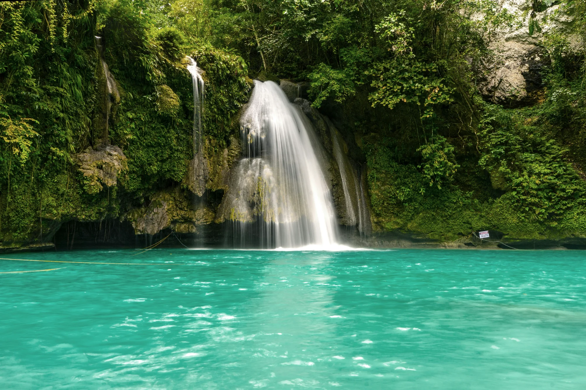
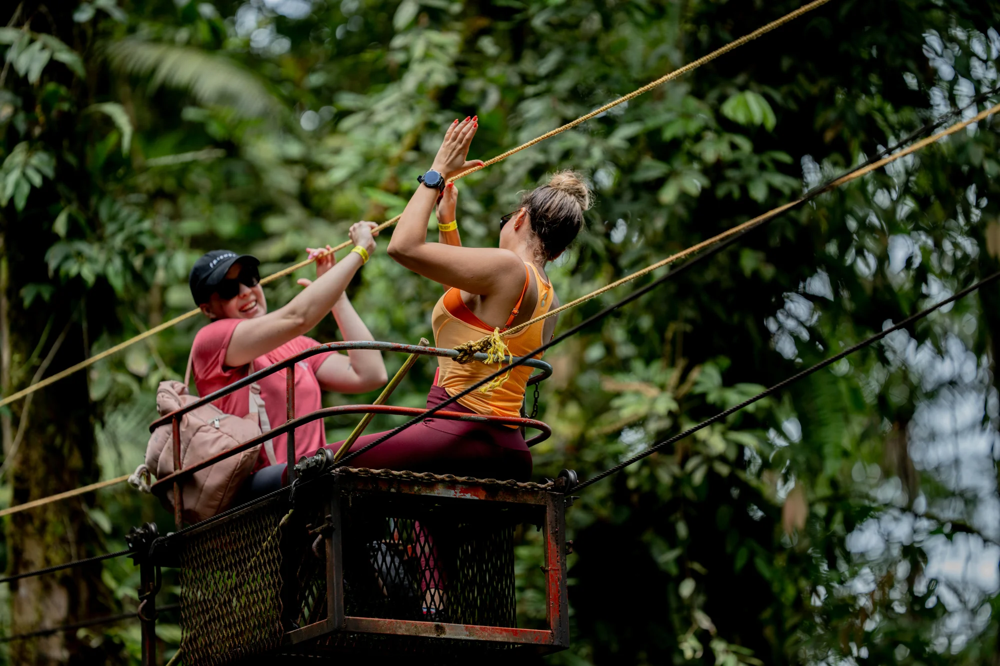

Nature & Adventure
From volcanic peaks to lush rainforests

Volcano Tours
Taniti is home to an active volcano that last erupted over 200 years ago. Today, it offers spectacular hiking and sightseeing opportunities.
- Guided hiking tours to the crater rim
- Helicopter tours for aerial views
- Visit the volcanic hot springs
- Photography tours at sunrise/sunset

Rainforest Adventures
Our tropical rainforest covers much of the island's interior, featuring stunning waterfalls, exotic wildlife, and ancient trees.
- Guided nature hikes (various difficulty levels)
- Waterfall swimming excursions
- Bird watching tours
- Canopy walkways and observation platforms

Zip-lining
Experience the thrill of soaring through the rainforest canopy on our professionally designed zipline course.
- Multiple zipline courses available
- Suitable for ages 8 and up
- All safety equipment provided
- Trained guides accompany all tours